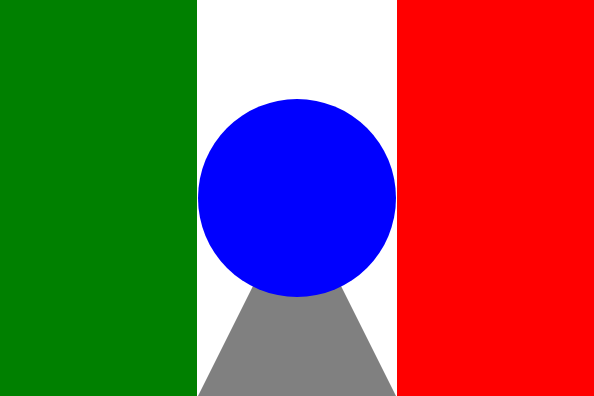
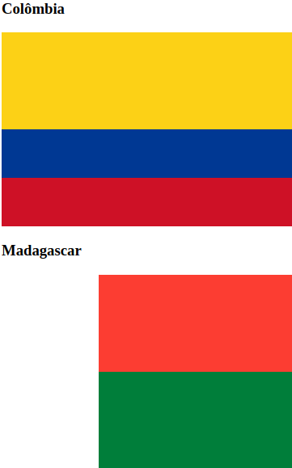
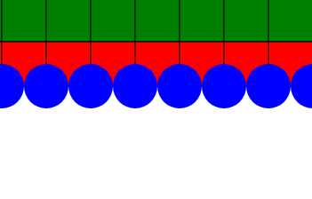

Gallery of Pages Coded from a Course
First Draw
Two Flags
Function Extracted
First Steps in Programming Course Project (Alura)
Gallery of Pages of the Course
Select the exercise created in course
First Draw

Image of project: First Draw
This project uses the canvas tag to draw a simple image
Two Flags

Image of project: Two Flags
This project uses the canvas tag to draw two flags: Colombia and Madagascar
Function Extracted

Image of project: Function Extracted
This project uses the canvas tag to draw geometric shapes that was created by functions